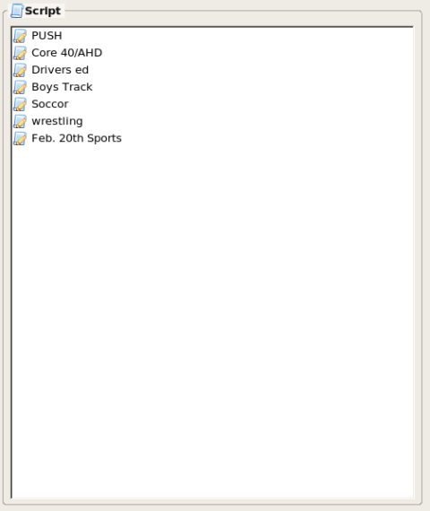

The Script is made up of one or more
segments. The Script is the starting point for everything which can be
done with TeleKast. The teleprompter feature uses the scripts
created. It is the place to begin your creative communication.
You can start a new script in the following ways: Opening TeleKast
starts a new script, use the shortcut key Control+N, from the File menu
you can choose New Script and from the context menu you can choose New
Script. If you already have a script open but have not saved it,
you will be prompted to choose whether you want to save it or not.
You can also pull many scripts together by importing scripts into the
current script. You can do this by either choosing Import Script from
the File menu or from the Script Editor context menu.